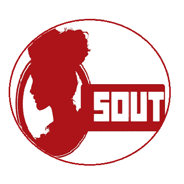
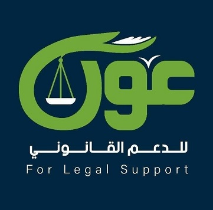

مبادرة صوت

مبادرة مؤنث سالم

صورة عون
يعرف العنف ضد المرأة بأنه أي فعل من أفعال العنف يؤدي إلى أذى أو معاناة جسدية أو جنسية أو عقلية للنساء والفتيات، بما في ذلك التهديد بمثل هذه الأفعال أو الإكراه أو الحرمان التعسفي من الحرية، سواء في الحيز العام أو الخاص، وقامت الدولة بعدة حلول لهذه الأزمة ومنها فرض عقوبات صارمة على كل من يتعرض للمرأة بأحد أشكال العنف أو إقامة حملات توعية والتي تحث الشباب على احترام المرأة بالإضافة إلى المبادرات التي تساهم بشكل فعال في التفاعل مع المجتمع المدني ورصد المشكلات وإيجاد الحلول اللازمة لذلك وفي اطار ذلك نسلط الضوء على بعض النماذج الفعاله و المبادرات الناجحة على الارض والتي اثرت في حياة العديد من الفتيات كما يلي.
مبادرة صوت
مبادرة مؤنث سالم
صورة عون